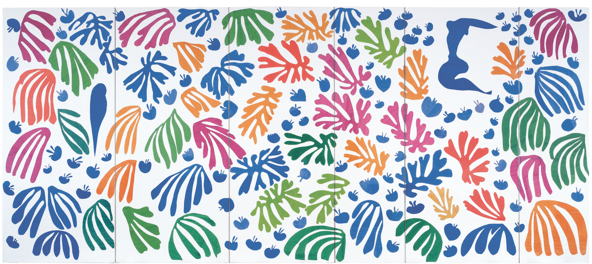
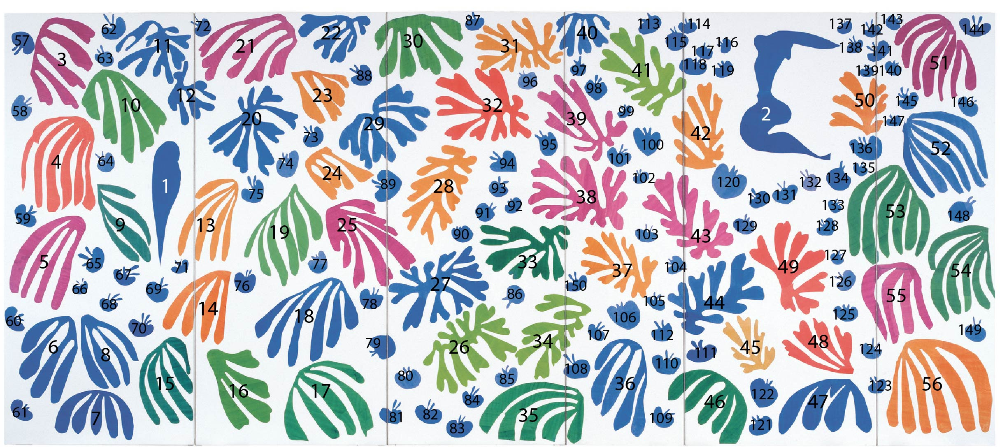

3.3. ECT on Matisse’s “The Parakeet and the Mermaid”
Here, we are going to give an example of using the ECT to classify the cutout shapes from Henri Matisse’s 1952 “The Parakeet and the Mermaid”.

[1]:
#-----------------
# Standard imports
#-----------------
import numpy as np # for arrays
import matplotlib.pyplot as plt # for plotting
from sklearn.decomposition import PCA # for PCA for normalization
from scipy.spatial import distance_matrix
from os import listdir # for retrieving files from directory
from os.path import isfile, join # for retrieving files from directory
from sklearn.manifold import MDS # for MDS
import pandas as pd # for loading in colors csv
#---------------------------
# The ECT packages we'll use
#---------------------------
from ect import ECT, EmbeddedGraph # for calculating ECTs
We’ve taken care of the preprocessing in advance by extracting out the shapes from the image. You can download these outlines here: outlines.zip.

[2]:
data_dir = "doc_source/notebooks/Matisse/outlines/" # set data directory
file_names = [f for f in listdir(data_dir) if isfile(join(data_dir, f)) and f[-4:] == '.txt'] # create a list of file names
file_names.sort() # sort the list of file names
print(f"There are {len(file_names)} files in the directory") # print number of files
There are 150 files in the directory
Here we have an example of one of these leaves loaded in as an EmbeddedGraph class.
[3]:
i = 3
shape = np.loadtxt(data_dir + file_names[i])
# shape = normalize(shape)
G = EmbeddedGraph()
G.add_cycle(shape)
G.plot(with_labels = False, node_size = 10)
[3]:
<Axes: >
We’re going to align the leaf using the PCA coordinates, min-max center, and scale it to fit in a ball of radius 1 for ease of comparisons.
[4]:
G.set_PCA_coordinates( center_type='min_max', scale_radius=1)
G.plot(with_labels = False, node_size = 10, bounding_circle=True)
[4]:
<Axes: >
And then we can compute the ECT of this leaf.
[5]:
num_dirs=50 # set number of directional axes
num_thresh=50 # set number of thresholds each axis
myect = ECT(num_dirs = num_dirs, num_thresh=num_thresh) # intiate ECT
myect.set_bounding_radius(1) # set bounding radius
myect.calculateECT(G) # calculate ECT on embedded graph
myect.plotECT() # plot ECT
Let’s just make a data loader with all of this for ease in a bit.
[6]:
def matisse_ect(filename, num_dirs, num_thresh):
shape = np.loadtxt(data_dir + filename)
G = EmbeddedGraph()
G.add_cycle(shape)
G.set_PCA_coordinates( center_type='min_max', scale_radius=1)
myect = ECT(num_dirs = num_dirs, num_thresh=num_thresh)
myect.set_bounding_radius(1)
M = myect.calculateECT(G)
return M
And now we can load in all the outlines, compute their ECT and store it in a 3D array.
[7]:
num_dirs=50 # set number of directional axes
num_thresh=50 # set number of thresholds each axis
ect_arr = np.zeros((len(file_names),num_dirs,num_thresh))
for i in range(len(file_names)): # for each leaf
ect_arr[i,:,:] = matisse_ect(file_names[i], num_dirs, num_thresh)
Here, we are just going to compute the distance between two ECTs using \(L_2\) distance.
[8]:
flattened_ect = ect_arr.reshape(len(file_names), num_dirs*num_thresh)
D = distance_matrix(flattened_ect, flattened_ect)
plt.matshow(D)
[8]:
<matplotlib.image.AxesImage at 0x303d56d40>
For visualization purposes, we can project this data into 2D using Multi Dimensional Scaling (MDS). Here we plot each figure at the MDS coordinates.
[9]:
n_components = 2 # select number of components
mds = MDS(n_components=n_components, # initialize MDS
dissimilarity="precomputed", # we have precomputed the distance matrix
normalized_stress='auto',
random_state=5 # select random state for reproducibility
)
MDS_scores = mds.fit_transform(D) # get MDS scores
[10]:
# read in color hexcodes
col_df = pd.read_csv("doc_source/notebooks/Matisse/colors.csv", header=None)
scale_val = 6 # set scale value
plt.figure(figsize=(8,8)) # set figure dimensions
for i in range(len(file_names)): # for each leaf
shape = np.loadtxt(data_dir+file_names[i]) # get the current shape
shape = shape - np.mean(shape, axis=0) # zero center shape
shape = scale_val * shape / max(np.linalg.norm(shape, axis = 1)) # scale to radius 1 then mult by scale_val
trans_sh = (shape + MDS_scores[i]) # translate shape to MDS position
plt.fill(trans_sh[:,0], trans_sh[:,1], c=col_df[0][i], lw=0) # plot shape
plt.gca().set_aspect("equal")
plt.title("MDS of Matisse's Leaves via ECT distances")
[10]:
Text(0.5, 1.0, "MDS of Matisse's Leaves via ECT distances")

3.3.1. Acknowledgements
This notebook was written by Liz Munch based on original code from Dan Chitwood.